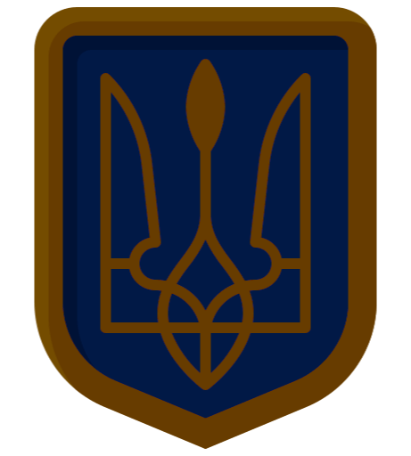

The State Coat of Arms of Ukraine, or the small State Coat of Arms of
Ukraine, is the official symbol of the state of Ukraine. The trident was approved as a small coat of
arms of Ukraine on February 19, 1992 by a resolution of the Verkhovna Rada together with its graphic
image.In 1996, its status was enshrined in Article 20 of the Constitution of Ukraine, where it is
also mentioned as the "Sign of the Princely State of Volodymyr the Great"